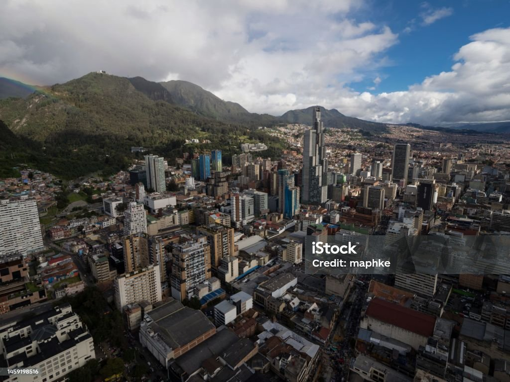
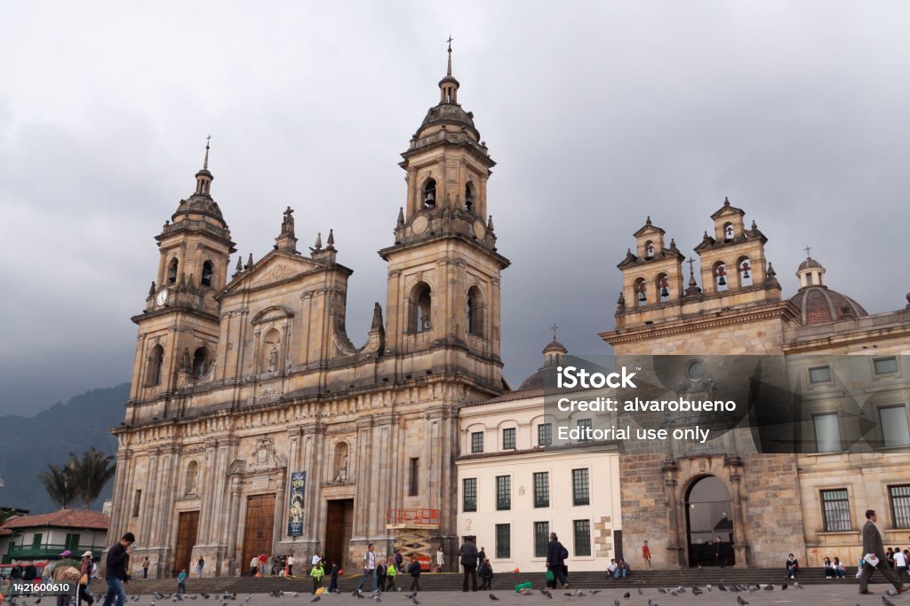

La Santa Maria
Catedral Principal de Bogotá
Vista Aérea de Bogotá

Os pontos turísticos importantes em Bogotá são o "Jardim Botânico José Celestino Mutis", a "Quinta de Bolívar", o "Observatório Astronômico Nacional", o "Planetário de Bogotá", o "Maloka" (parque temático sobre ciência e tecnologia), o "Mirador Metropolitano da Torre Colpatria", o "Mirador de La Calera", o "Monumento de Banderas a las Américas" (ao lado da estação banderas do TransMilenio) e La Candelaria, localidade que é patrimônio e Bem de Interesse Cultural de Caráter Nacional. Além disso, a cidade conta com numerosos parques de atrações mecânicas como: "Salitre Mágico", "Mundo Aventura" e "Camelot".